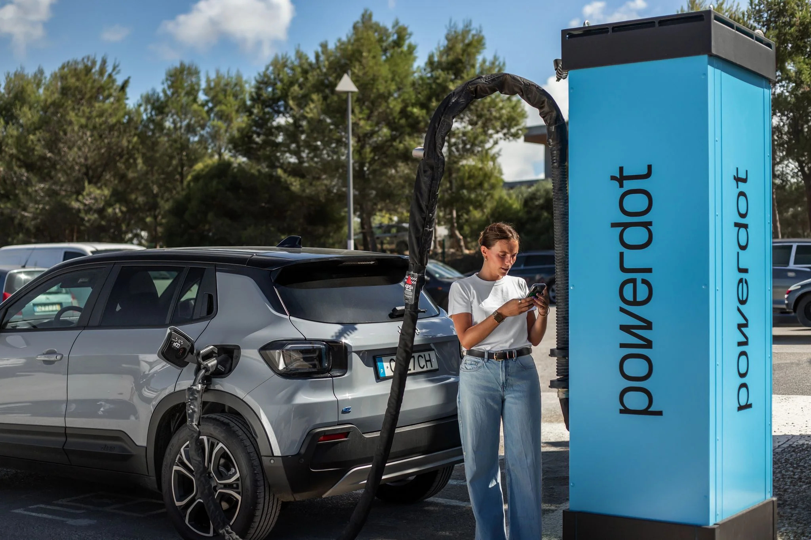
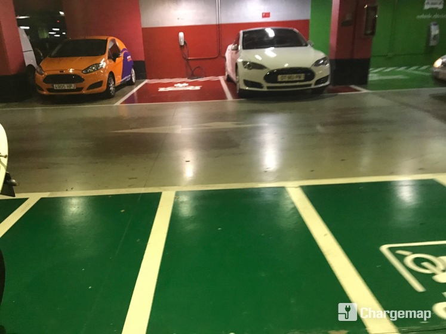
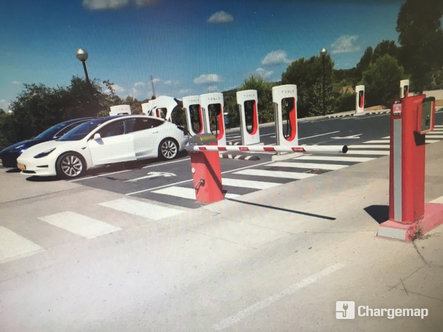

Consulta ràpida
Punts de recàrrega ElectraCat
Cada punt s'identifica amb un codi únic: la lletra E indica ElectraCat i les tres xifres finals en marquen l'ordre. Les fitxes mostren el tipus de càrrega, la capacitat total i les places lliures en aquest moment.



